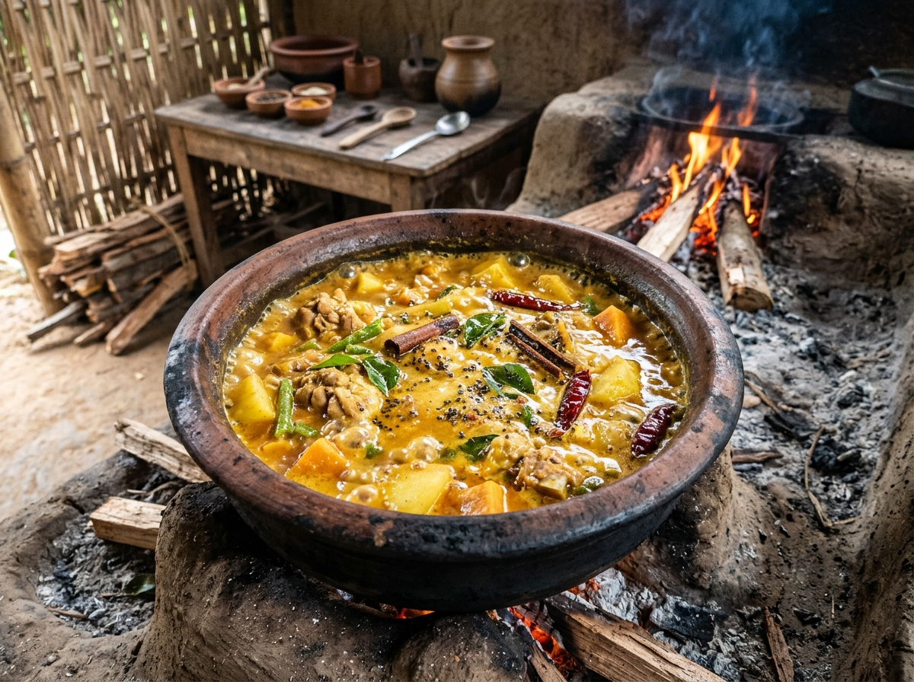
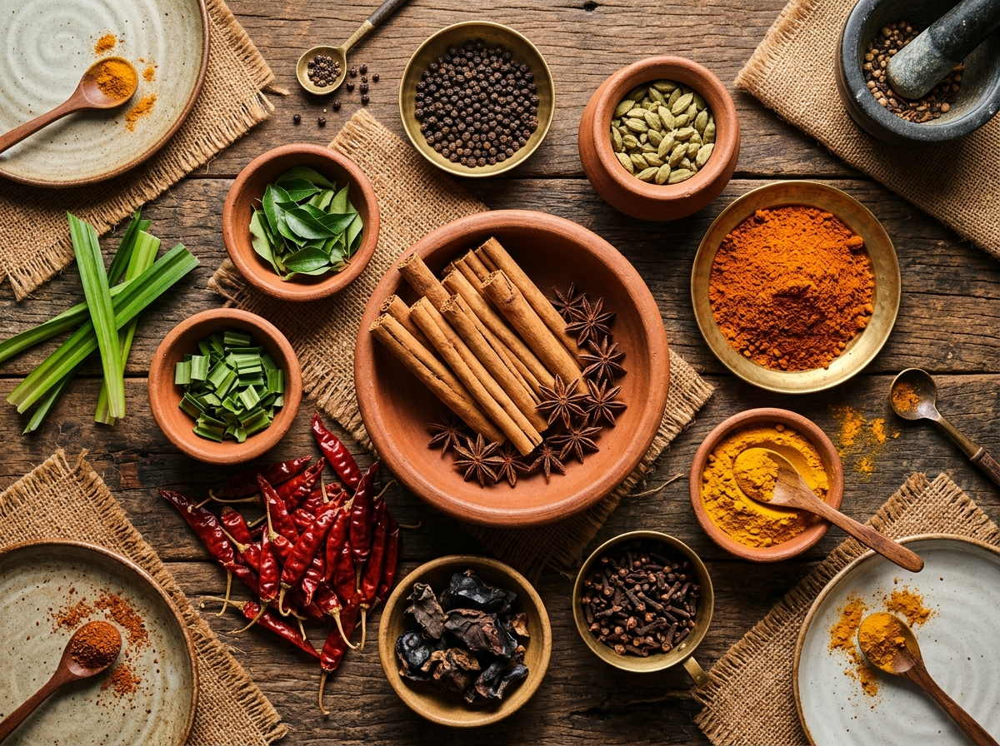

The Soul of Sri Lankan Village Cooking
Sri Lankan food is an alchemy of fertile soil, tropical sunshine, Ayurvedic medicine, and centuries of maritime spice trade history. Step into the traditional implements and customs that create flavors you cannot find in any modern restaurant.

The Clay Hearth (Dhara Lipa) & Terracotta Earthenware
Before gas burners or electricity, every Sri Lankan home was anchored by the *Dhara Lipa* — a three-stone mud hearth built by hand with clay and straw. Food was exclusively prepared in unglazed terracotta clay pots (*mativalan*).
Clay is naturally porous. When curries simmer slowly over embers of cinnamon branches and coconut shells, microscopic pores in the clay allow heat and steam to circulate evenly without burning. The alkaline natural properties of baked river clay neutralize acidic ingredients like goraka and tamarind, leaving meat incredibly tender and curries silky smooth.
The Tools Every Tourist Learns to Use
You won't find food processors, electric blenders, or canned coconut milk in our kitchen. Here are the five ancestral tools you will master with your own hands.
Miris Gala (මිරිස් ගල)
Granite Grinding Stone: A heavy, flat granite slab with a cylindrical stone roller. Crushes fresh chili, garlic, ginger, and shallots with sheer mechanical pressure, unlocking essential aromatic oils that electric blades slice away.
Hiramanaya (හිරමනය)
Coconut Scraping Stool: A carved wooden stool fitted with a circular serrated steel blade. You sit on the stool, hold half a freshly husked coconut, and scrape in rhythmic rotations to create fluffy, snow-white coconut shreds.
Wangediya & Molgaha (වංගෙඩිය)
Wooden Mortar & Pestle: Carved from heavy jackfruit or margosa hardwood. Used to pound roasted coriander, cumin, fennel, and whole black peppercorns into fine, aromatic Ceylon curry powders.
Kulla (කුල්ල)
Woven Cane Winnower: A teardrop-shaped tray hand-woven from wild river reeds. Village cooks toss raw rice and dry lentils into the air to let the gentle afternoon breeze carry away dust and chaff.

Food as Medicine: The Philosophy of the Six Tastes
In traditional Sri Lankan culture, a meal is never thrown together haphazardly. It follows the principles of *Ahara* (Ayurvedic nutritional balance). A complete rice and curry spread must harmoniously balance the six fundamental tastes (*Shad Rasa*):
- Madhura (Sweet): Nourishing coconut milk, red heirloom rice, and sweet caramelized onions.
- Amla (Sour): Smoky wild goraka, lime juice, and green mango to stimulate digestive fires (*Agni*).
- Lavana (Salty): Natural unrefined sea salt from southern Sri Lankan salt pans (*lewayas*).
- Katu (Pungent): High-piperine black pepper, ginger, garlic, and sun-dried red chilies.
- Tikta & Kashaya (Bitter & Astringent): Fresh wild greens (*mallung*), bitter gourd (*karawila*), and turmeric to cleanse the blood.
Meet Your Village Cooking Mentors
Our instructors are authentic village cooks and agro-botanists whose warmth, patience, and humor will make you feel like family.
Amma Sunethra
Lead Village Cook • 35 Yrs ExperienceThe heart and laughter of our kitchen pavilion. Sunethra learned traditional cooking from her grandmother in the 1970s. She can tell when a curry is perfectly balanced simply by smelling the steam rising from the clay pot.
Rohan Bandara
Organic Botanist & Spice MasterRohan guides tourists through the living spice groves. A specialist in endemic Sri Lankan flora, he explains the historical Dutch and Portuguese spice trade and the cultivation of true Ceylon cinnamon (*Kurundu*).
Somalatha Akka
Hopper Queen & Stone SpecialistSomalatha is legendary for her lightning-fast wrist technique with hopper woks and her granite slab grinding skills. She guides tourists through every step so their first egg hopper turns out golden and lacy.